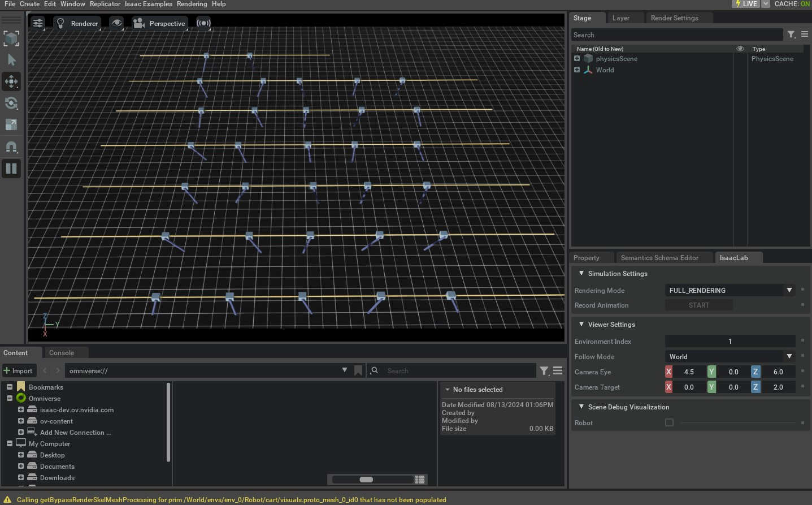

上一节创建了 Manager-Based Base Environment，本教程将在此基础上加入 Task 定义，构建用于 Reinforcement Learning 的 Manager-Based RL Environment。
基础 Environment 提供感知—行动接口：Agent 向 Environment 发送 Action，并接收 Observation。导航、平衡等学习任务还需要明确目标，因此 envs.ManagerBasedRLEnv 在基础接口上增加了 Task 相关机制。
Isaac Lab 推荐通过 envs.ManagerBasedRLEnvCfg 配置 Task，而不是直接修改 Environment Base Class。这样可以分离 Task 规范和Environment 实现，并复用相同的组件。
本教程将配置 Cartpole 平衡任务，介绍如何通过 Reward Term、Termination、Curriculum 和 Command 完整描述学习目标。
1 代码
在本教程中，我们使用定义在 Cartpole Environment isaaclab_tasks.manager_based.classic.cartpole Module。
代码 cartpole_env_cfg.py
# Copyright (c) 2022-2026, The Isaac Lab Project Developers (https://github.com/isaac-sim/IsaacLab/blob/main/CONTRIBUTORS.md).
# All rights reserved.
#
# SPDX-License-Identifier: BSD-3-Clause
import math
import isaaclab.sim as sim_utils
from isaaclab.assets import ArticulationCfg, AssetBaseCfg
from isaaclab.envs import ManagerBasedRLEnvCfg
from isaaclab.managers import EventTermCfg as EventTerm
from isaaclab.managers import ObservationGroupCfg as ObsGroup
from isaaclab.managers import ObservationTermCfg as ObsTerm
from isaaclab.managers import RewardTermCfg as RewTerm
from isaaclab.managers import SceneEntityCfg
from isaaclab.managers import TerminationTermCfg as DoneTerm
from isaaclab.scene import InteractiveSceneCfg
from isaaclab.utils import configclass
import isaaclab_tasks.manager_based.classic.cartpole.mdp as mdp
##
# Pre-defined configs
##
from isaaclab_assets.robots.cartpole import CARTPOLE_CFG # isort:skip
##
# Scene definition
##
@configclass
class CartpoleSceneCfg(InteractiveSceneCfg):
"""Configuration for a cart-pole scene."""
# ground plane
ground = AssetBaseCfg(
prim_path="/World/ground",
spawn=sim_utils.GroundPlaneCfg(size=(100.0, 100.0)),
)
# cartpole
robot: ArticulationCfg = CARTPOLE_CFG.replace(prim_path="{ENV_REGEX_NS}/Robot")
# lights
dome_light = AssetBaseCfg(
prim_path="/World/DomeLight",
spawn=sim_utils.DomeLightCfg(color=(0.9, 0.9, 0.9), intensity=500.0),
)
##
# MDP settings
##
@configclass
class ActionsCfg:
"""Action specifications for the MDP."""
joint_effort = mdp.JointEffortActionCfg(asset_name="robot", joint_names=["slider_to_cart"], scale=100.0)
@configclass
class ObservationsCfg:
"""Observation specifications for the MDP."""
@configclass
class PolicyCfg(ObsGroup):
"""Observations for policy group."""
# observation terms (order preserved)
joint_pos_rel = ObsTerm(func=mdp.joint_pos_rel)
joint_vel_rel = ObsTerm(func=mdp.joint_vel_rel)
def __post_init__(self) -> None:
self.enable_corruption = False
self.concatenate_terms = True
# observation groups
policy: PolicyCfg = PolicyCfg()
@configclass
class EventCfg:
"""Configuration for events."""
# reset
reset_cart_position = EventTerm(
func=mdp.reset_joints_by_offset,
mode="reset",
params={
"asset_cfg": SceneEntityCfg("robot", joint_names=["slider_to_cart"]),
"position_range": (-1.0, 1.0),
"velocity_range": (-0.5, 0.5),
},
)
reset_pole_position = EventTerm(
func=mdp.reset_joints_by_offset,
mode="reset",
params={
"asset_cfg": SceneEntityCfg("robot", joint_names=["cart_to_pole"]),
"position_range": (-0.25 * math.pi, 0.25 * math.pi),
"velocity_range": (-0.25 * math.pi, 0.25 * math.pi),
},
)
@configclass
class RewardsCfg:
"""Reward terms for the MDP."""
# (1) Constant running reward
alive = RewTerm(func=mdp.is_alive, weight=1.0)
# (2) Failure penalty
terminating = RewTerm(func=mdp.is_terminated, weight=-2.0)
# (3) Primary task: keep pole upright
pole_pos = RewTerm(
func=mdp.joint_pos_target_l2,
weight=-1.0,
params={"asset_cfg": SceneEntityCfg("robot", joint_names=["cart_to_pole"]), "target": 0.0},
)
# (4) Shaping tasks: lower cart velocity
cart_vel = RewTerm(
func=mdp.joint_vel_l1,
weight=-0.01,
params={"asset_cfg": SceneEntityCfg("robot", joint_names=["slider_to_cart"])},
)
# (5) Shaping tasks: lower pole angular velocity
pole_vel = RewTerm(
func=mdp.joint_vel_l1,
weight=-0.005,
params={"asset_cfg": SceneEntityCfg("robot", joint_names=["cart_to_pole"])},
)
@configclass
class TerminationsCfg:
"""Termination terms for the MDP."""
# (1) Time out
time_out = DoneTerm(func=mdp.time_out, time_out=True)
# (2) Cart out of bounds
cart_out_of_bounds = DoneTerm(
func=mdp.joint_pos_out_of_manual_limit,
params={"asset_cfg": SceneEntityCfg("robot", joint_names=["slider_to_cart"]), "bounds": (-3.0, 3.0)},
)
##
# Environment configuration
##
@configclass
class CartpoleEnvCfg(ManagerBasedRLEnvCfg):
"""Configuration for the cartpole environment."""
# Scene settings
scene: CartpoleSceneCfg = CartpoleSceneCfg(num_envs=4096, env_spacing=4.0, clone_in_fabric=True)
# Basic settings
observations: ObservationsCfg = ObservationsCfg()
actions: ActionsCfg = ActionsCfg()
events: EventCfg = EventCfg()
# MDP settings
rewards: RewardsCfg = RewardsCfg()
terminations: TerminationsCfg = TerminationsCfg()
# Post initialization
def __post_init__(self) -> None:
"""Post initialization."""
# general settings
self.decimation = 2
self.episode_length_s = 5
# viewer settings
self.viewer.eye = (8.0, 0.0, 5.0)
# simulation settings
self.sim.dt = 1 / 120
self.sim.render_interval = self.decimation
用于运行 Environment 的 Script run_cartpole_rl_env.py 存在于
isaaclab/scripts/tutorials/03_envs 目录。 Script 类似于
cartpole_base_env.py 上一篇教程中的 Script ，只不过它使用了
envs.ManagerBasedRLEnv 而不是 envs.ManagerBasedEnv.
代码 run_cartpole_rl_env.py
# Copyright (c) 2022-2026, The Isaac Lab Project Developers (https://github.com/isaac-sim/IsaacLab/blob/main/CONTRIBUTORS.md).
# All rights reserved.
#
# SPDX-License-Identifier: BSD-3-Clause
"""
This script demonstrates how to run the RL environment for the cartpole balancing task.
.. code-block:: bash
./isaaclab.sh -p scripts/tutorials/03_envs/run_cartpole_rl_env.py --num_envs 32
"""
"""Launch Isaac Sim Simulator first."""
import argparse
from isaaclab.app import AppLauncher
# add argparse arguments
parser = argparse.ArgumentParser(description="Tutorial on running the cartpole RL environment.")
parser.add_argument("--num_envs", type=int, default=16, help="Number of environments to spawn.")
# append AppLauncher cli args
AppLauncher.add_app_launcher_args(parser)
# parse the arguments
args_cli = parser.parse_args()
# launch omniverse app
app_launcher = AppLauncher(args_cli)
simulation_app = app_launcher.app
"""Rest everything follows."""
import torch
from isaaclab.envs import ManagerBasedRLEnv
from isaaclab_tasks.manager_based.classic.cartpole.cartpole_env_cfg import CartpoleEnvCfg
def main():
"""Main function."""
# create environment configuration
env_cfg = CartpoleEnvCfg()
env_cfg.scene.num_envs = args_cli.num_envs
env_cfg.sim.device = args_cli.device
# setup RL environment
env = ManagerBasedRLEnv(cfg=env_cfg)
# simulate physics
count = 0
while simulation_app.is_running():
with torch.inference_mode():
# reset
if count % 300 == 0:
count = 0
env.reset()
print("-" * 80)
print("[INFO]: Resetting environment...")
# sample random actions
joint_efforts = torch.randn_like(env.action_manager.action)
# step the environment
obs, rew, terminated, truncated, info = env.step(joint_efforts)
# print current orientation of pole
print("[Env 0]: Pole joint: ", obs["policy"][0][1].item())
# update counter
count += 1
# close the environment
env.close()
if __name__ == "__main__":
# run the main function
main()
# close sim app
simulation_app.close()
2 代码解析
“创建 Manager-Based Base Environment”教程已经说明如何配置 Scene、Observation、Action 和 Event，因此本节只介绍与 RL Task 相关的组件。
Isaac Lab 在 envs.mdp Module 中提供了多种常用 Term。本教程会使用其中一部分，用户也可以在 Task 专属子 Package 中实现自己的 Term，例如 isaaclab_tasks.manager_based.classic.cartpole.mdp。
2.1 定义 Rewards
managers.RewardManager 负责计算 Agent 的 Reward。每个 Reward Term 使用 managers.RewardTermCfg 配置，其中包含计算 Reward 的 Function 或 Callable Class、对应权重，以及调用 Reward Function 时传入的 "params" 字典。
Cartpole Task 使用以下 Reward Term：
活着 Reward：鼓励 Agent 尽可能长时间地存活。
终止 Reward：同样惩罚 Agent 的终止。
极角 Reward：鼓励 Agent 将杆保持在所需的直立位置 Position。
购物车 Velocity Reward：鼓励 Agent 使购物车 Velocity 尽可能小。
杆 Velocity Reward：鼓励 Agent 保持杆 Velocity 尽可能小。
@configclass
class RewardsCfg:
"""Reward terms for the MDP."""
# (1) Constant running reward
alive = RewTerm(func=mdp.is_alive, weight=1.0)
# (2) Failure penalty
terminating = RewTerm(func=mdp.is_terminated, weight=-2.0)
# (3) Primary task: keep pole upright
pole_pos = RewTerm(
func=mdp.joint_pos_target_l2,
weight=-1.0,
params={"asset_cfg": SceneEntityCfg("robot", joint_names=["cart_to_pole"]), "target": 0.0},
)
# (4) Shaping tasks: lower cart velocity
cart_vel = RewTerm(
func=mdp.joint_vel_l1,
weight=-0.01,
params={"asset_cfg": SceneEntityCfg("robot", joint_names=["slider_to_cart"])},
)
# (5) Shaping tasks: lower pole angular velocity
pole_vel = RewTerm(
func=mdp.joint_vel_l1,
weight=-0.005,
params={"asset_cfg": SceneEntityCfg("robot", joint_names=["cart_to_pole"])},
)
2.2 定义 Termination 标准
多数学习 Task 以有限长度的 Episode 运行。以 Cartpole 为例，目标是尽可能长时间保持杆的平衡；当系统进入不稳定或不安全状态时，应提前终止 Episode。即使 Agent 持续保持平衡，也会在达到时间上限后开始新 Episode，使其能够从不同初始状态继续学习。
managers.TerminationsCfg 定义 Episode 的终止条件。本例在满足以下任一条件时终止：
Episode长度 Episode长度大于定义的 max_Episode_length
购物车超出范围 购物车超出界限 [-3, 3]
managers.TerminationsCfg.time_out Flag 用于区分超时导致的 Truncation 和真正的 Termination；两者的含义与 Gymnasium 文档一致。
@configclass
class TerminationsCfg:
"""Termination terms for the MDP."""
# (1) Time out
time_out = DoneTerm(func=mdp.time_out, time_out=True)
# (2) Cart out of bounds
cart_out_of_bounds = DoneTerm(
func=mdp.joint_pos_out_of_manual_limit,
params={"asset_cfg": SceneEntityCfg("robot", joint_names=["slider_to_cart"]), "bounds": (-3.0, 3.0)},
)
2.3 定义 Commands
对于具有目标条件的 Task，可以用 managers.CommandManager 为 Agent 生成目标或 Command。Command Manager 负责在每个 Step 更新和重新采样 Command，也可以将 Command 作为 Observation 提供给 Agent。
本教程的 Task 不需要 Command，因此保留默认值 None。其他 Locomotion 或 Manipulation Task 中可以找到 Command Manager 的配置示例。
2.4 定义 Curriculum
训练 Agent 时，常从简单目标开始，并随训练进展逐步提高 Task 难度，这就是 Curriculum Learning。Isaac Lab 提供 managers.CurriculumManager 来配置此过程。
为保持示例简单，本教程不使用 Curriculum；其他 Locomotion 和 Manipulation Task 中提供了相关示例。
2.5 将它们结合在一起
定义上述组件后，即可创建 Cartpole 的 ManagerBasedRLEnvCfg。它与“创建 Manager-Based Base Environment”中的 ManagerBasedEnvCfg 类似，但额外包含前述 RL 组件。
@configclass
class CartpoleEnvCfg(ManagerBasedRLEnvCfg):
"""Configuration for the cartpole environment."""
# Scene settings
scene: CartpoleSceneCfg = CartpoleSceneCfg(num_envs=4096, env_spacing=4.0, clone_in_fabric=True)
# Basic settings
observations: ObservationsCfg = ObservationsCfg()
actions: ActionsCfg = ActionsCfg()
events: EventCfg = EventCfg()
# MDP settings
rewards: RewardsCfg = RewardsCfg()
terminations: TerminationsCfg = TerminationsCfg()
# Post initialization
def __post_init__(self) -> None:
"""Post initialization."""
# general settings
self.decimation = 2
self.episode_length_s = 5
# viewer settings
self.viewer.eye = (8.0, 0.0, 5.0)
# simulation settings
self.sim.dt = 1 / 120
self.sim.render_interval = self.decimation
2.6 运行 Simulation Loop
run_cartpole_rl_env.py 的 Simulation Loop 与上一教程基本相同，区别是创建 envs.ManagerBasedRLEnv，而不是 envs.ManagerBasedEnv。因此，envs.ManagerBasedRLEnv.step() 还会返回 Reward 和 Termination 状态；Info 字典中则记录各 Reward Term 的贡献、各 Term 的终止状态和 Episode Length 等信息。
def main():
"""Main function."""
# create environment configuration
env_cfg = CartpoleEnvCfg()
env_cfg.scene.num_envs = args_cli.num_envs
env_cfg.sim.device = args_cli.device
# setup RL environment
env = ManagerBasedRLEnv(cfg=env_cfg)
# simulate physics
count = 0
while simulation_app.is_running():
with torch.inference_mode():
# reset
if count % 300 == 0:
count = 0
env.reset()
print("-" * 80)
print("[INFO]: Resetting environment...")
# sample random actions
joint_efforts = torch.randn_like(env.action_manager.action)
# step the environment
obs, rew, terminated, truncated, info = env.step(joint_efforts)
# print current orientation of pole
print("[Env 0]: Pole joint: ", obs["policy"][0][1].item())
# update counter
count += 1
# close the environment
env.close()
3 代码执行
与前面的教程相同，执行 run_cartpole_rl_env.py 运行 Environment：
./isaaclab.sh -p scripts/tutorials/03_envs/run_cartpole_rl_env.py --num_envs 32
显示的 Simulation 与上一教程相似，但 Environment 现在还会返回 Reward 和 Termination 状态。每个 Environment 在满足 Configuration 中的终止条件时会独立 Reset。

关闭窗口或在启动 Simulation 的 Terminal 中按 Ctrl+C 即可停止。
本教程通过 Reward、Termination、Command 和 Curriculum Term 扩展基础 Environment，构建了用于 RL 的 Task Environment；还演示了如何运行 envs.ManagerBasedRLEnv 并读取其返回信号。
虽然可以手动实例化 envs.ManagerBasedRLEnv，但为每个 Task 编写专用 Script 并不便于扩展。下一教程将使用 gymnasium.make()，通过 Gymnasium Interface 按名称创建 Environment。